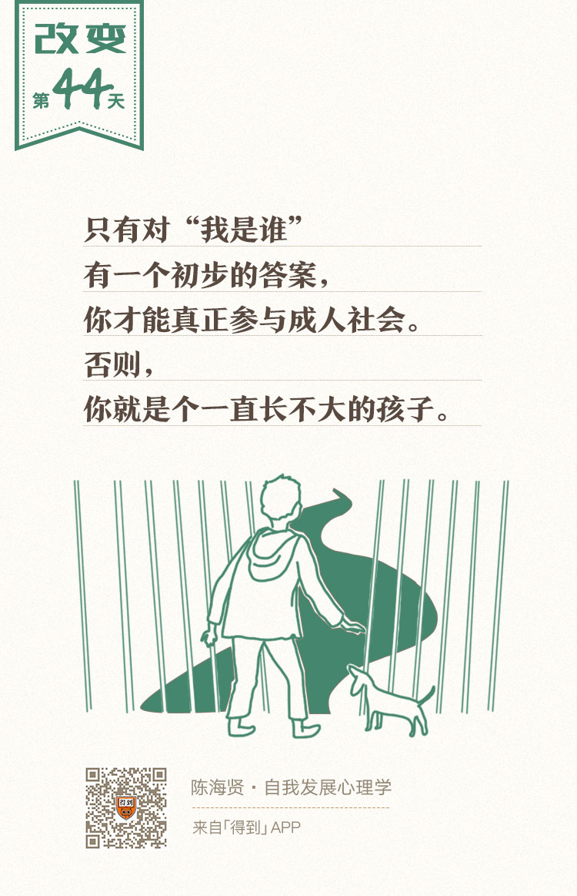

44丨青春期使命：如何确立身份认同？

欢迎来到《自我发展心理学》。
你好，我是陈海贤。
也许你已经发现了，我们课程的视角，是从微观的、具体的视角，逐渐延伸到宏观的、抽象的视角。
前面的章节，我们从行为的发展、心智的发展，逐渐延展到关系的发展、转折期的发展。这样递进式的安排，能够不断增进你对自我和自我发展的理解。
那么课程的最后一章，我们要讲什么呢？
我们将从更宏观的角度，讲整个人生中的自我发展，看看我们在人生特定阶段的课题和困难。
按照心理学家埃里克森（Erik Homburger Erikson）的理论，人生的发展过程，是自我的范围不断扩大的过程。
从青春期获得稳定的自我、到建立亲密关系时变成两个人、到更广泛的职业联系、到关心下一代甚至是更大的人类共同体，自我的范围在不断扩大。
同时，这个发展的过程也可以分为两个阶段。
从青春期开始的人生的前半段，是收集的阶段。我们收集了稳定的自我、亲密关系、职业认同和与之相伴的成就、声望、尊重。
到了人生的后半阶段，我们开始进入了分发的阶段。我们开始把前半生收集的东西分发出去，去关心自我以外的他人，关心我们的下一代。
我们会从对下一代的繁衍中获得人生意义，获得一种新的可能性。否则，我们的生命就会陷入停滞的状态。
这一章，我会将人生分为四个时期：
- 青春期；
- 成年早期；
- 成年期；
- 晚年期。
每个时期，都有它特定的发展课题，也有阻碍它发展的特定障碍，那就是各种形式的自我中心。
今天我们来讲成人发展的第一个阶段——青春期。
最重要的任务：寻找身份认同
人们对青春期的时间长短说法不一，埃里克森说从12岁到18岁之间，也有说35岁之前的。我觉得现代人的青春期普遍要长一些，取个宽泛的年龄范围，一般是在15-25岁之间。
这个阶段最重要的任务就是寻找和建立身份认同。
什么是身份认同呢？
身份认同在很多地方也被称为同一性。这个概念包含的含义是很复杂的，你可以这样简单地理解：当一个人获得了身份认同之后，他就对“我是谁？”这个问题，有了一个相对确定的答案。
为什么寻找身份认同会成为青春期的最主要的发展任务？
因为青春期本身就充满了矛盾。它是一个断裂的过渡时期。
生理上，你要面对陌生的、逐渐成熟的身体和强烈却羞于启齿的性欲。
在家庭关系上，一方面你还依赖自己的父母和家庭，另一方面，你又开始尝试脱离家庭，来为自己争取独立的空间。
在社会上，一方面你开始参与社会，另一方面，你对社会又一无所知。
青春期是孩子和成人之间的过渡期，在这个时期，很多自我的新的部分会冒出来，要整理出关于“我是谁？”这个问题的答案，就变得分外困难了。
可是，只有你对这个问题有了一个初步的答案，你才能真正参与成人社会，否则你就一直会是一个长不大的孩子。
那在这个阶段，阻碍我们发展的障碍，也就是我们要克服的自我中心是什么呢？
就是对自我形象的过度关注，并且很在意别人的评价。
大部分青春期的孩子，都会变得非常自我。有一个形象的比喻，说这一个阶段的人，就像生活在舞台的聚光灯下，觉得自己的一举一动都在受别人的关注和评价。
一方面，他们很在意自己的容貌、才能，想要变得更好。另一方面，他们对这种“在意”本身，又带着某种羞愧。
就像我的一个上高中的来访者，总觉得自己不漂亮，一个人在寝室里的时候，会偷偷学着化妆，自己照镜子看。可是照完镜子以后，她一定会把妆卸干净，生怕别人知道她也爱美。
我有一个青春期的来访者，因为学业压力大，不想去上学。我问他担心什么。他说担心如果自己努力了，学习成绩还不好，别人就会觉得他蠢。
这是典型的僵固型思维的特征。
我说：“好，那你能不能说说看，究竟谁会说你蠢？你最怕谁说你蠢？”
他愣了一下，说：“所有人啊，所有人都会说。”
你看，一方面，他生活在别人的目光里，觉得别人都在评价自己。另一方面，这个别人都是非常笼统的，是他自己想象出来的。
看起来，他很在乎别人的评价，可实际上，他对别人真实的想法根本不感兴趣。他关注的，还是他自己。
在青春期，经常会有这种特别的自恋。这是因为我们不知道自己是谁，所以需要从别人的评价中，拼凑出自我的形象和概念。越是找不到这个问题的答案，我们对自我的形象，就会越执着。
这种假想的聚光灯下的生活压力，会带来两种典型的反应。
一种，是对社会标准非常顺从。
既然别人的评价很重要，那我就按别人的评价来。别人觉得成绩好很重要，那我就努力学习，别人觉得金融专业好，那我就去学金融专业。
他人的评价就变成了自我评价的标准，也变成了选择的标准。如果我得到了别人的赞扬，我就很骄傲，如果得不到，我就很自卑。
可是，顺从他人的评价，是很难发展出坚定的身份认同的，只会把他们变成特别听话的孩子。
另一种，是对社会标准非常反抗。
很多青春期的孩子是通过反抗父母，来宣示自己合法的成人身份的。
你觉得应该好好学习，我偏不学。你要我循规蹈矩，我偏不听话，我偏要当杀马特。这些反抗“大人的世界”的人会聚在一起，相互取暖，形成了一些奇特的青春期的亚文化。
成人越是看不惯，越是批判这种亚文化，就越增加了这种亚文化的生命力。因为他们就是想要通过坚持特立独行的行为，来告诉你：“我与你不同”，从而确认“我是谁”。
可是，“不同”之后呢？
刻意的反抗也会变成另一种在乎，因为他们要确认的价值，还是建立在他们所反对的东西的基础上。所以顺从和反抗是同一种东西的两个不同侧面，在这个基础上，都很难建立起自我的身份认同。
身份认同的建立
那身份认同最终是怎么建立的呢？获得这种身份认同的标志又是什么呢？
我曾接待过一个青春期的来访者。
最开始我见他的时候，他穿着一条有很多破洞的牛仔裤，脚上是高帮的牛皮靴，裤子和靴子上都缀着很多亮闪闪的金属片，像个摇滚歌手，留着长发。
他跟我讲很多他对这个社会的愤怒。
他觉得周围的大人都很虚伪势力，只知道让他好好学习，从不关心他是什么样的人。他爸妈想让他好好学习，可是他觉得，学习工作、买房买车之类的事情，都毫无意义。
我问他将来想做什么，他犹豫了一下，说想去学艺术。学艺术是很多年轻人逃避生活的借口，所以当时我也没太当真。
后来，我们的咨询就中断了。
我第二次见他，是在三年以后。他已经在国外的一个艺术院校读书了。
他穿着一件白色的T恤，是他们的校服。长头发还留着，但是已经扎起来了，很有艺术家的范儿。他说他想过来，是来看看我，问问我有什么减压的方法。
我很奇怪，问他这几年经历了什么。
原来，他爸看他不上进，就送他去学画画了，觉得这是考学的一个捷径。学画画的过程中，他遇到了一个美术老师，这个美术老师自己的人生经历也很坎坷，从农村一步步奋斗，才变成了一个小有名气的老师。
他很佩服这个老师，这个老师对他也很好，坚信他很有才华，并鼓励他好好学英语，去考美国的一个艺术院校。
老师跟他说：“你现在觉得孤独，就是因为你身边没有像你一样有想法的年轻人，等你去那个学校就好了。艺术家都会想很多的，关键是要学习一种东西来表达自己。”
在成长的过程中，遇到一个这样的老师是非常重要的，他会让你找到人生的榜样。
学了一年多美术以后，他就真的去了一个艺术院校学设计了。在周围遇到了很多相似的年轻人。这些特立独行的年轻人，让他找到了归属感。同时，他也开始认真地学习专业，参与竞争。
他来咨询我，就是因为学业压力很重，经常做功课到两三点，问我有什么减压方法。
我很奇怪，就问他：“你不是觉得这个社会不公平吗？不是觉得学习和工作没什么意义吗？那干嘛这么努力？”
他好像忘了这事，说：“是啊，是很不公平。可是，我只管做好我自己的事情就好了。”
这句简单的话，代表了他思维上一个重大的进步。他以前幻想的那个敌人轰然坍塌了。从今以后，如果还有敌人，那也是类似“功课繁重”这类真实的敌人。
“社会是不公平，可是我只管做好我自己的事。”这句话表明，他已经意识到了两个重要的道理：
首先，是我的人生，需要我自己来负责。我再埋怨社会不公平，再反抗社会，都改变不了“我要为自己负责”这个事实。
其次，就算我对主流社会的价值观有不满，我也不需要说出来，我只要做好自己的事就好了。
当他这么说的时候，他已经开始能够容纳矛盾了，并在这种矛盾中，发展出一种对自己的忠诚。这种忠诚是很坚实的，不需要通过顺从和反抗来确认，他只需要容纳这种矛盾就可以了。
我认为，一个人获得身份认同的标志，就是为自我负责，以及学会容纳矛盾。
那么，他是怎么建立起这种身份认同的呢？
- 首先，在专业的尝试中，他逐渐发现了自己的某些才能，并获得了信心；
- 其次，他有一个好的、能欣赏他，并能被他视为榜样的老师；
- 再然后，有一群价值观相似、能够包容他做自我探索的同伴。
这些都是建立身份认同的有利因素。而他获得了稳定的身份认同以后，他就不会那么过度地关注自我，那么在乎别人的评价，也就逐渐克服了青春期的自我中心，开始参与真实的成人社会。
身份认同能够帮助我们从假想的被评价的关系中解脱出来，获得一种自我认可的能力。因为这种自我认可的能力，我们和别人的关系，也就变得更平等了。
所以在咨询结束的时候，我跟他握了握手，我说：“欢迎来到成年人的世界！”
回顾一下，这一讲我们主要讲了青春期的发展课题，那就是寻找和确立身份认同。我们讲了青春期发展的障碍，发展身份认同的重要条件和身份认同建立的标志。
当身份认同建立以后，“我”变成了一个不言自明的东西，不需要仔细去想。这时候，我们就可以继续向前，以成人的姿态去建立新的关系，迎接更多的挑战和精彩。
下节课，我们会讲另一个人生发展阶段——成年早期的人生课题。
我们下节课见。
